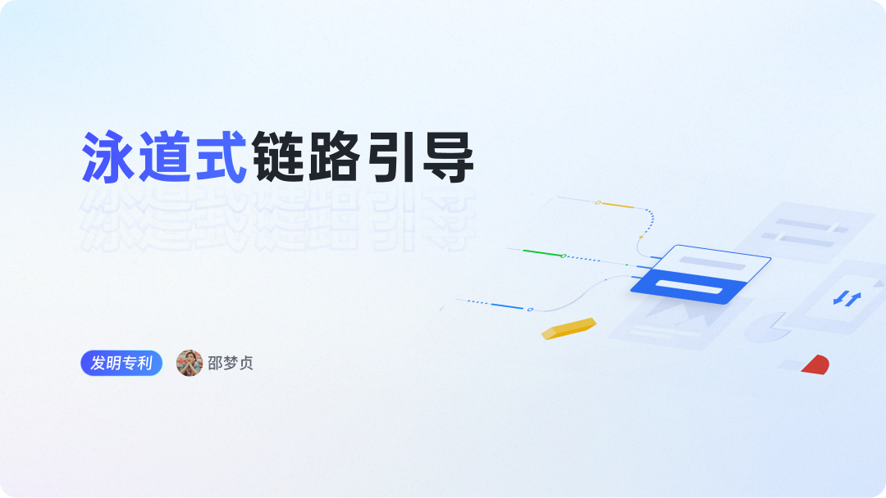
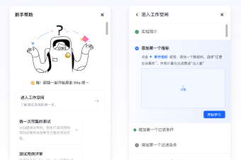
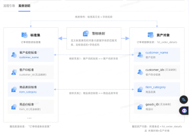

任务流程 不清晰
仅聚焦于当前单点的任务，不清楚下一步流程，不同情况如何处理
GUIDED WORKFLOW

在数据治理场景中，很多工作需要管理者、治理POC和一线同学上下游协作完成。涉及角色多、流程长。新用户在进入平台后，容易遇到以下问题：
仅聚焦于当前单点的任务，不清楚下一步流程，不同情况如何处理
对平台核心功能流程缺乏全面了解，无法深度体验产品相关功能
不知道上下游合作角色是谁，出了问题应该找谁来解决
涉及多模块的、复杂协作链路的工作流，难以通过构建单一角色的步骤式引导/局部引导或静态图帮助用户了解到全貌。
适用于对于单一角色、线性的工作流程的介绍
没法介绍多角色、非线性流程

承载的信息内容较少
难以提供对于页面模块的一些导航指引和进一步的说明

提供改进的泳道图及节点交互系统，展示各角色在任务流程中的进程，明确各阶段、角色及工作内容，帮助用户了解全貌。节点交互提供页面指引和详细介绍，提升用户操作体验和信息获取效率。
已沉淀出泳道式引导的场景物料，方便设计师与前端能快速复用，比较低成本搭建成场景链路的引导
已沉淀出泳道式引导的场景物料，方便设计师与前端能快速复用，比较低成本搭建成场景链路的引导
专利申请：发明交底书